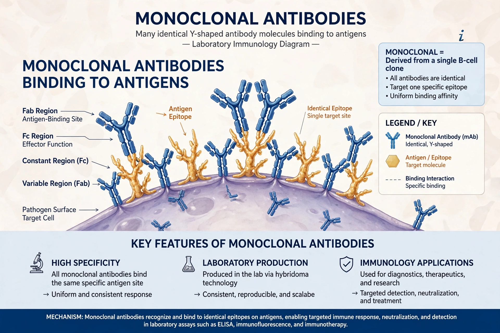

Monoclonal antibodies (mAbs) are antibodies that are made by identical immune cells that are all clones of a unique parent cell. They have monovalent affinity, binding to the same epitope, in contrast to polyclonal antibodies. The hybridoma technique for producing them was developed by Georges Köhler and César Milstein in 1975, earning the Nobel Prize in 1984.

| Monoclonal antibody | |
|---|---|
| Developed | 1975, Köhler & Milstein |
| Method | Hybridoma technology |
| Uses | Cancer therapy, autoimmune disease, diagnostics, research |
Hybridomas are created by fusing antibody-producing B cells with myeloma cells, producing immortal cell lines that secrete a single antibody type. Modern production also uses recombinant DNA technology, phage display, and transgenic animals, yielding chimeric, humanized, and fully human antibodies — reflected in naming suffixes such as -ximab, -zumab, and -umab.
Monoclonal antibodies are used to treat cancers (e.g., rituximab, trastuzumab), autoimmune diseases (adalimumab), transplant rejection, infectious diseases, and migraine. They can work by blocking receptors, marking cells for immune destruction, or delivering cytotoxic payloads as antibody–drug conjugates.
They are essential reagents in ELISA, Western blotting, flow cytometry, and immunohistochemistry, and in pregnancy and disease test kits.